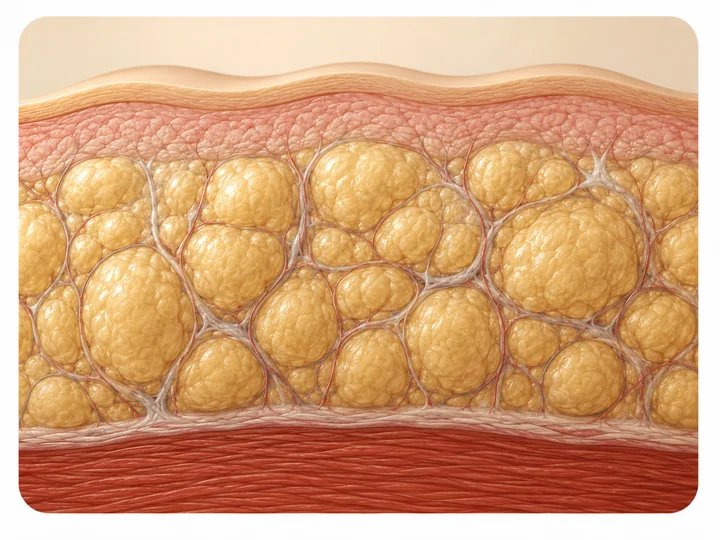

¿Qué tiene que ver la piel de naranja con el lipedema?
Te miras la piel de los muslos con la luz de lado y ahí está: esas hendiduras parejas que parecen cáscara de naranja. No te la estás imaginando, pero tampoco es un diagnóstico que puedas hacerte sola frente al espejo.

La textura de "piel de naranja" es uno de los hallazgos que buscamos al palpar el tejido durante una valoración de lipedema en Medellín, no solo al mirarlo. Por sí sola no confirma nada: es una pieza más dentro de un examen más completo, y vale la pena entender qué significa antes de sacar conclusiones por tu cuenta.
¿Por qué la piel se ve así?
En el lipedema, el tejido graso bajo la piel no crece de forma pareja. Aparecen bandas de tejido fibroso que anclan la piel a capas más profundas en unos puntos y no en otros, mientras entre esos anclajes se acumulan nódulos de grasa que van de un tamaño de grano de arroz a uno de nuez, y en algunos casos más grandes. El resultado es una superficie con hundimientos en los puntos fijos y abultamientos entre medio: el patrón que llamamos "piel de naranja" o, en algunas descripciones clínicas, "efecto colchón".
Ese cambio de textura se relaciona con fibrosis del tejido conectivo: el cuerpo deposita más colágeno del habitual en esa zona, y eso endurece el tejido además de cambiar su forma. No es algo que se vea igual en toda la pierna ni desde el primer día.
¿En qué etapa del lipedema aparece?
Las clasificaciones que describen cómo evoluciona el lipedema por etapas la sitúan, la mayoría, en la etapa 2: ahí los nódulos crecen y la piel pasa de verse lisa a mostrar esa superficie irregular y más firme. Algunas fuentes la describen ya en la etapa 1, al estirar la piel, aunque en reposo todavía se vea lisa. En la etapa 3, los hundimientos y los nódulos suelen ser más grandes y marcados. No todas las fuentes coinciden en el punto exacto en que empieza, y eso es justo lo que hace que valga la pena una valoración en persona en vez de autoclasificarte por una foto. Puedes leer más en las etapas del lipedema y cómo evoluciona con el tiempo.
Lo que miramos nosotros, además de la piel
En Seravena preferimos no quedarnos solo con el aspecto de la piel: la piel de naranja ayuda a sospechar, pero el diagnóstico se arma combinando varias señales, no una sola foto de una sola zona.
Junto con la textura, revisamos si el patrón es simétrico entre ambas piernas, si duele al pellizcar o al tocar con una presión suave, si salen moretones con golpes mínimos, y si los pies quedan respetados mientras el resto de la pierna sí cambió. También hacemos la prueba de fóvea (presionar y ver si queda una marca hundida), porque ayuda a diferenciar el lipedema de la retención de líquidos o del linfedema. Nada de esto se concluye con una sola mirada; por eso una valoración revisa el conjunto, no un solo signo. Si quieres un repaso de las señales completas antes de tu cita, te sirve cómo saber si tienes lipedema: señales para autoevaluarte.
Lo que la piel de naranja NO significa por sí sola
Vale la pena decirlo con honestidad: la textura de piel de naranja no es exclusiva del lipedema. La celulitis común, la que tienen muchas mujeres sin ningún problema vascular ni de tejido graso, puede verse muy parecida en caderas y glúteos, sobre todo al pellizcar la piel o al sentarse. Lo que suele inclinar la balanza hacia lipedema no es la textura en sí, sino que venga junto con dolor, moretones fáciles, simetría marcada entre las dos piernas y que no cambie aunque bajes de peso en el resto del cuerpo.
Tampoco duele igual en todas las pacientes.
Por eso un diagnóstico de lipedema no se hace mirando una foto en internet ni comparando tu piel con la de otra persona: se arma en consulta, revisando el patrón completo y, cuando hace falta descartar un componente venoso, con eco doppler.
Antes de tu próxima valoración, puedes anotar algo sencillo: si al pellizcar la zona con esa textura te duele más que en otras partes de la pierna, si ahí te salen moretones sin golpe, y si el patrón se repite igual en ambas piernas. Esa nota orienta más el examen que cualquier fotografía.
Si quieres entender el panorama completo, puedes revisar también cómo se confirma el diagnóstico de lipedema. Para una valoración completa, en Seravena ofrecemos la valoración de lipedema en Medellín, con eco doppler en el mismo consultorio cuando hace falta descartar un componente venoso. También puedes escribirnos desde contacto para agendar.
Preguntas frecuentes
¿La piel de naranja siempre significa que tengo lipedema?
No necesariamente. Esa textura también aparece en la celulitis común, sin relación con el lipedema, sobre todo en caderas y glúteos. Lo que orienta más hacia lipedema es que venga acompañada de dolor al tacto, moretones sin golpe, simetría entre ambas piernas y que no mejore con dieta ni ejercicio.
¿En qué etapa del lipedema aparece la piel de naranja?
La mayoría de las clasificaciones la ubican en la etapa 2, cuando los nódulos bajo la piel crecen y la superficie se vuelve irregular y más firme. Algunas fuentes ya la describen en la etapa 1, al estirar la piel, y en la etapa 3 los hundimientos suelen ser más marcados: no todas coinciden en el punto exacto en que empieza.
¿La piel de naranja en las piernas se puede quitar?
No existe un tratamiento que la elimine por completo. El manejo conservador (compresión adecuada, ejercicio de bajo impacto y, en algunos casos, drenaje linfático manual) puede ayudar con la pesadez y el dolor, pero no cambia la textura de fondo del tejido.